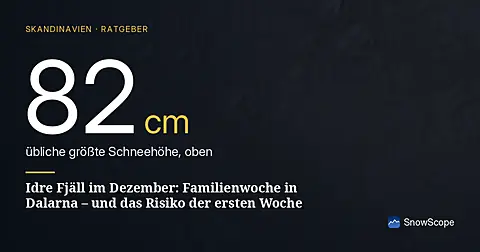
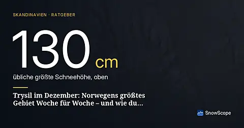

Schneeberichte · Skandinavien
Tägliche Schneeberichte für Skifahrer: wo der Schnee liegt, was kommt und wo du fahren kannst, aus der SnowScope-Schneekarte und Messstationen. Jede Zahl stammt aus den Daten des Tages.
Schnee nach Ländern heute
Die weißesten Länder heute: Norwegen (89 %), Schweden (83 %) und Finnland (55 %).
Am meisten Neuschnee in der kommenden Woche: Norwegen (38 cm), Schweden (15 cm) und Finnland (13 cm).

Idre Fjäll im Dezember: 32 cm an der Mittelstation an einem typischen 15. Dezember; 65 % der Winter mit 30 cm Mitte Dezember, 76 % in der Weihnachtswoche. Ehrliche Chancen.

Sälen im Dezember: 28 cm an einem typischen 15. Dezember und 48 % der Winter mit 30 cm Mitte Dezember, weniger als in den 1980ern; Trysil nebenan schneidet besser ab.

Ruka im Dezember: 6-Tage-Skipass 265 EUR, Tageskarte 58 EUR; 36 cm an einem typischen 15. Dezember, aber nur 39 % der Winter mit 30 cm in der ersten Woche.

Hemavan im Dezember: 82 cm an der Mittelstation an einem typischen 15. Dezember, jeder Winter mit 30 cm Mitte Dezember; der tiefste Dezember unserer Nordic-Auswahl.

Oppdal im Dezember: 60 cm an der Talstation (585 m) an einem typischen 15. Dezember, 93 % der Winter mit 30 cm Mitte Dezember – besser als Trysils Tal.

Geilo im Dezember: 57 cm an der Mittelstation an einem typischen 15. Dezember, 96 % der Winter mit 30 cm Mitte Dezember; Tageskarte ab 590 NOK (rund 56 EUR).

Hemsedal im Dezember: 70 cm an der Mittelstation und 106 cm am Gipfel an einem typischen 15. Dezember, aber 32 cm im Tal; Geilo nebenan ab 590 NOK pro Tag.

Levi im Dezember: 38 cm an einem typischen 15. Dezember, 91 % der Winter mit 30 cm in der Weihnachtswoche, mehr Dezemberschnee als früher; Tageskarte 60 EUR, online 57 EUR.

12 nordische Skigebiete im Dezember: Hemavan, Hemsedal und Geilo hatten Mitte Dezember in 96-100 % der Winter 30 cm an der Mittelstation; Tageskarten in Finnland 58-60 EUR.

Trysil im Dezember: 44 cm an der Mittelstation an einem typischen 15. Dezember, 83 % der Winter mit 30 cm Mitte Dezember; die Preise sind dynamisch, also früh buchen.

Åre im Dezember: 40 cm an der Mittelstation an einem typischen 15. Dezember, 89 % der Winter mit 30 cm Mitte Dezember, aber oben ein starker Rückgang seit den 1980ern.